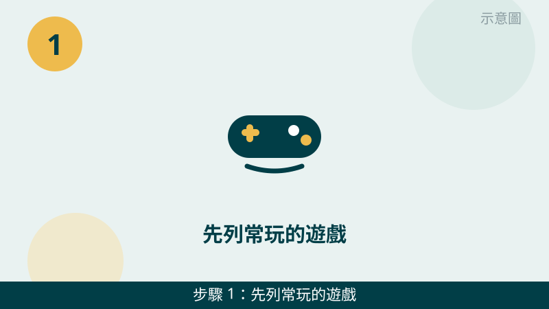
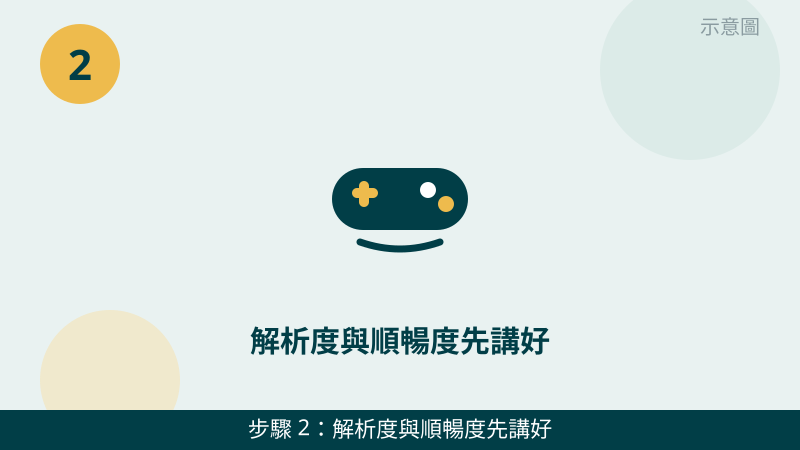
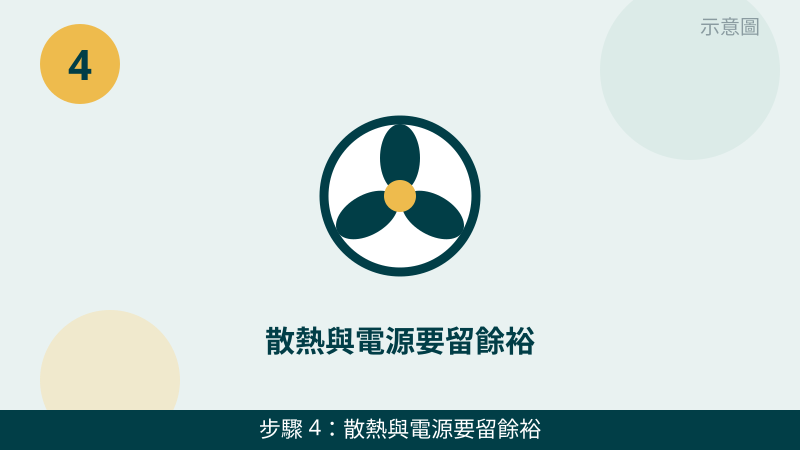

遊戲電腦沒有一種配法適合所有人。先看您玩什麼遊戲，再決定配多強。輕鬆的小遊戲和畫面精細的大型遊戲，需要的效能差很多；先把遊戲清單列出來，配菜單才不會配太強浪費錢，也不會配太弱跑不動。
開始之前先跟您說明：組新機報價透明，正式報價會列出每一個零件的品牌、型號和價格，讓您自己比價；傳 LINE 詳談需求後再報價給您確認。文章裡不寫零件型號的行情價，因為行情會變動，正式報價才會列出每個零件的實際價格；這裡只跟您談方向；檢測費 $300（有修全額折抵），可開立統一發票。
遊戲清單先傳給我們看
把常玩的遊戲、想要的解析度與順暢度傳 LINE 給我們，我們會先幫您看方向對不對，再報一個總價給您確認。先免費評估、檢測後報價，確認後再決定要不要組。
遊戲電腦怎麼配 6 步：先看遊戲再決定
- 1. 先列常玩的遊戲：玩什麼，比想配多強更重要。請先列出常玩的遊戲名稱、一次玩多久、會不會同時開直播或錄影。怎麼判斷：遊戲清單越清楚，配法就越準；如果只說「要打遊戲」，我們很難知道該配到什麼程度。把清單寫下來，再來談預算會順很多。

示意圖（非官方截圖） - 2. 解析度與順暢度先講好：想要多順，先說清楚。請先講好：螢幕解析度是多少、玩起來想要多順暢、畫面要開到多精細。怎麼判斷：解析度越高、想要越順，效能需求就越高，總價也會跟著上去；先把期待講清楚，配出來的電腦才不會跟您想的不一樣。

示意圖（非官方截圖） - 3. 零件方向：先求順、再求畫面。遊戲電腦的零件方向，建議先求玩起來順，再求畫面精細。怎麼判斷：玩起來卡頓，再漂亮的畫面也享受不到；先把順暢度顧好，畫面再依預算慢慢往上加，這樣的配法用起來最實在。我們會依您的遊戲清單，幫您抓這個方向。
示意圖（非官方截圖） - 4. 散熱與電源要留餘裕：打久了也要穩。遊戲電腦一玩就是好幾個小時，散熱要夠、電源要留餘裕，長時間玩才穩。怎麼判斷：散熱不夠容易過熱降速、電源不夠容易不穩，這兩樣不能只抓剛剛好。我們報價時會把散熱與電源的餘裕算進總價裡，不會為了壓低總價而省略。

示意圖（非官方截圖） - 5. 組裝整線＋燒機測試：裝好還要測過才交機。零件裝好之後，我們會把線路整理好，再做燒機測試，確認開機正常、運作穩定，才會交機給您。怎麼判斷：有經過測試的電腦，交機後出狀況的機率會低很多；遊戲電腦更要測過，長時間玩才安心。
示意圖（非官方截圖） - 6. 交機驗收實際開遊戲試：現場玩玩看，順了再帶回家。交機時請現場實際開遊戲試試看，確認玩起來順不順、畫面正不正常，我們也會教您基本使用方式，有疑問當場問最清楚。怎麼判斷：現場開遊戲試過沒問題再帶回家，日後玩起來更安心；如果交機時發現哪裡不對，請當場跟我們說，我們會先幫您確認再交機。
示意圖（非官方截圖）
出現這些情況，就別再自己試了
- 不確定零件合不合得來、不知道該怎麼搭配——請先拍照或傳訊息問我們，不要憑感覺亂買亂裝，規格不合裝不上去事小，硬裝可能傷到零件
- 想自己組裝但不知道怎麼裝、線路或接頭位置不確定——請先拍照問我們，不要硬裝，裝錯接頭或弄壞卡扣反而更貴
- 自備零件想請我們組裝——請先提供型號給我們確認相容，零件本身不保固，確認合得來再安排組裝
- 遊戲清單還沒想好、想要多順也還沒想清楚——請先把遊戲和期待想一想再來問，方向清楚了，報價才會準
遊戲電腦配多強沒有標準答案，要看您玩什麼遊戲、想要多順、預算多少。把遊戲清單和預算傳 LINE 給我們，我們會報一個總價給您確認，您確認後再決定要不要組。營業時段平日 20:00–24:00、假日 06:00–24:00，全預約制，請先約好時間再過來。
想直接組一台新機？先看組新機專頁
用途、預算、參考總價一次看清楚，再傳 LINE 給我們報一個總價確認。
常見問題
遊戲電腦組裝要先準備什麼？
先列出常玩的遊戲、想要的解析度與順暢度，再抓一個預算範圍。把這幾點傳 LINE 給我們，我們會先幫您看方向，再報一個總價給您確認，不用先自己查零件規格。
報價是總價嗎？會不會另外收工資？
正式報價會列出每一個零件的品牌、型號和價格，讓您自己比價；傳 LINE 詳談需求後再報價給您確認。檢測費 $300（有修全額折抵），可開立統一發票，價格確認後再決定組不組。
組好之後可以現場開遊戲試嗎？
可以。交機時請現場實際開遊戲試試看，確認玩起來順不順、畫面正不正常，有疑問當場問最清楚。組裝完成後我們會先做燒機測試，確認運作穩定才交機。